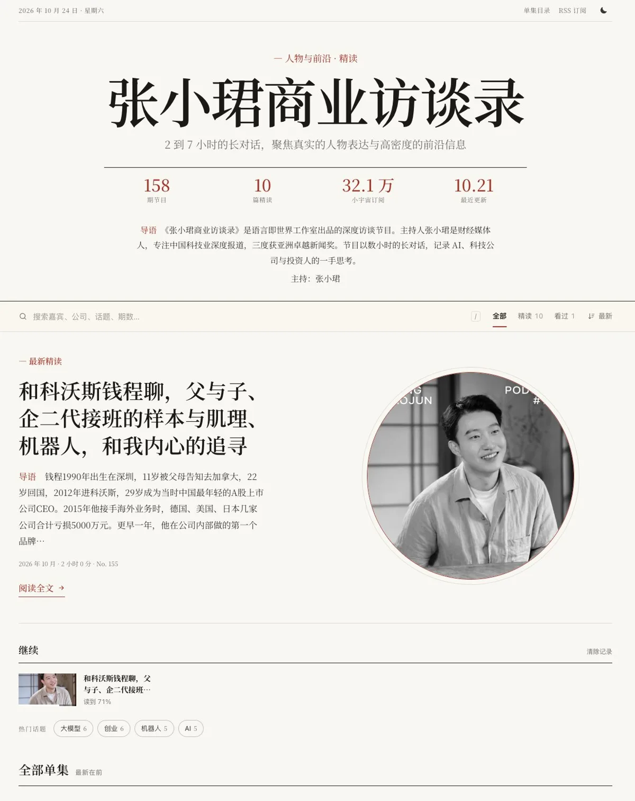
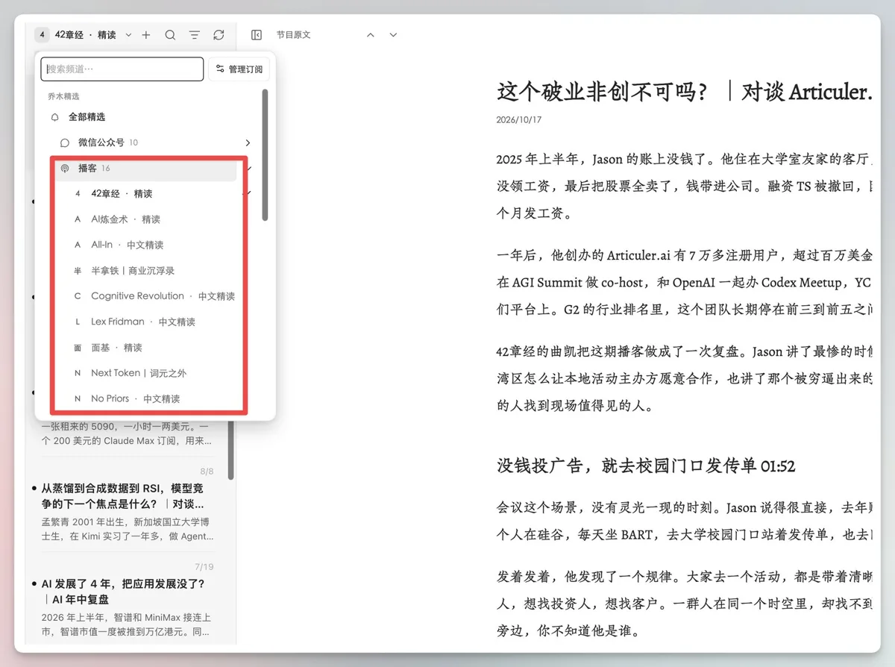

一、原帖全文（中文原文，逐字镜像）
有价值的播客太多了，没那么多时间听怎么办呢？ 那就看 AI 转写的文章吧，差不多花十分钟，就能看到一小时的播客里的主要信息了 加上是精细的转写而非总结，所以信息也不会丢很多，碰到非常感兴趣的就去听原音频，相得益彰。 以下是我常听的 8 个播客，全部做了自动转写，每期自动更新文章，一目了然。 感谢向阳 @vista8 开发这几个网站，向阳是我的许愿式编程 Agent？ zhangxiaojun.qiaomu.ai 张小珺商业访谈录精读：张小珺数小时长访谈的精读，记录 AI、科技公司与投资人的一手思考。 42zhangjing.qiaomu.ai 42章经精读：曲凯对谈创业者与投资人，围绕一个具体问题追问到底。 latetalk.qiaomu.ai 晚点聊精读：《晚点 LatePost》出品的一手科技访谈，覆盖大模型、具身智能与互联网公司。 crossing.qiaomu.ai 十字路口精读：寻找并访谈 AI 时代的积极行动者，关注 AI 给各行各业带来的变革。 aialchemy.qiaomu.ai AI炼金术精读：徐文浩与任鑫聊 AI 带来的本质变化和商业机会。 35huan.qiaomu.ai 三五环精读：刘飞邀请城市里的局内人聊天，发现不同的认知视角与生活态度。 zhixing.qiaomu.ai 知行小酒馆精读：有知有行出品，聊投资理财，也聊怎样更好地生活。 mianji.qiaomu.ai 面基精读：每期请一位一线经验者，把一个行业或一种职业讲清楚
作者在楼里的跟帖
- 向阳乔木回复说，如果不想打开网站，可以在 Obsidian 装 Qiaomu AI RSS 插件，「已全部内置 RSS」，一个界面看所有播客，还能划线、做笔记、AI 问答（原回复）。Orange 接着说：「这个插件就更方便了」。
- 有读者（@gentlemanzhao）提醒清单里少了「苔藓之火」，Orange 回复「关注啦」。
二、要点
- 用读代替听：一小时的播客，读精读大约十分钟就能拿到主要信息；遇到特别感兴趣的再回去听原音频。
- 一站对应一个节目：8 个精读站都是
<节目>.qiaomu.ai，覆盖科技访谈、AI 创业、城市生活、投资理财和行业科普。 - 自动更新：新的一期出来后会自动转写、生成精读、上线。Orange 称之为「每期自动更新文章」。
- 同一套模板：和向阳乔木此前做的 lex.qiaomu.ai（Lex Fridman 中文站）同出一源。报纸式版面，带音频播放器、搜索、RSS 全文、Markdown 版和 llms.txt。
- 可以在 Obsidian 里读：用 Qiaomu AI RSS 插件，所有节目的精读都能在一个阅读器里看、摘录到日记里。
三、8 个精读站一览（2026-10-26 实测）
「期数 / 精读」取自各站首页的统计行，表示节目总期数和已经生成精读的篇数。订阅数是首页显示的小宇宙订阅数。最近两篇精读取自各站 llms.txt，只列标题。
可以看出，各站的精读目前只覆盖最近十几期，大约 15–16 篇，不是全部历史节目。按发布时间，最新的精读集中在 2026 年 9–10 月。
四、怎么用
- 网页：首页头条是最新一篇精读，下面列出全部单集，可以切换「精读 / 有文稿 / 看过」。单集页有节目音频播放器，下面是精读正文。
- RSS：每站都有
/feed.xml全文订阅，例如 zhangxiaojun.qiaomu.ai/feed.xml。 - 给 AI 读：每篇精读都有 Markdown 版，把单集网址的
.html换成.md就行。/llms.txt列出了全部精读和单集。 - Obsidian：在官方插件库装 Qiaomu AI RSS（向阳乔木作，约 7k 下载）。频道里「播客」分组已经内置这些精读源，还有 Lex Fridman、All-In、No Priors 等英文节目的中文精读。选中文字可以摘录到今日日记或当前笔记，也能添加自己的 RSS / OPML。
- 手机：在 Safari 里「添加到主屏幕」，能像应用一样打开，读过的文章离线也能看。

五、「转写」还是「精读」？
原帖说这是「精细的转写而非总结」。各站自己的说法更准确一些：llms.txt 写的是「AI 基于转写整理的精读」，「不公开逐字稿，内容版权归原节目所有」。页脚也写明「精读由 AI 基于原节目整理，仅供学习参考，以原节目为准」。所以更好的理解是：比摘要细得多的按主题改写的长文，有小标题，也保留了发言人原意，但它不是逐字稿。引用前最好回到原音频核对。
各站都声明自己是非官方粉丝站点，和节目及制作方没有隶属关系；音频播放的是节目官方渠道的文件。站点的 robots.txt 写着「欢迎搜索引擎与 AI 检索 / 问答引擎抓取」，引用时要求注明「xxx.qiaomu.ai 精读（AI 整理）」并附上链接。
六、对我们的启发
- 「一节目一站」比大杂烩更好传播：子域名就是节目名，推荐时一句话就能说清楚。Orange 这条帖子本身就是例子（约 4.4 万浏览、964 收藏）。
- 精读只做最近一批：先覆盖最新的十几期，让订阅读者每周都有新内容，历史节目以后再补。
- 入口多一个，阅读场景就多一个：网页、RSS、Markdown/llms.txt、Obsidian 插件、PWA，同一份内容分发到读者习惯待的地方。
- 边界写在页面上：「非官方」「不公开逐字稿」「以原节目为准」这几句话放在 llms.txt 和页脚。我们的镜像页也应该保持同样的写法。
说明与缺口
- 数字是 2026-10-26 读取各站公开首页和 llms.txt 得到的，精读还在持续生成，数字会变。原帖配图里张小珺站显示 10 篇精读（发帖时），本页读取时已是 15 篇。
- 只读了公开首页、robots.txt、llms.txt 和 Obsidian 插件页，没有调用任何接口，也没有下载音频。
- 没有找到这些站点的开源许可，因此不翻译、不转载精读正文。